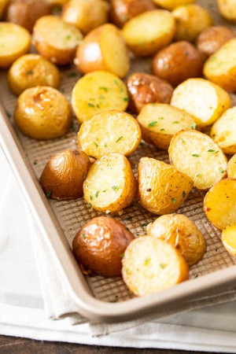

jump to recipe

Description
Simple Oven Roasted Potatoes made with Garlic and Parsley make an easy and delicious side dish that only requires a few minutes of prep and goes with so many meals! Whip up these crispy and golden roasted baby potatoes for a dinner that the whole family will love.
Ingredients
- 3 pounds baby potatoes, red or yellow
- 3 Tbsp olive oil
- 3 cloves garlic, minced
- 1/2 tsp freshly ground black pepper
- 1-2 Tbsp chopped fresh parsley, dried works too
Instructions
- Preheat the oven to 400° F (200°C).
- Cut the potatoes in half and put them in a bowl (if using normal sized potatoes cut them in small chunks). Toss with olive oil, garlic, salt, and pepper until evenly coated.
- Transfer to a large enough sheet pan and spread out the potatoes in one layer, cut side down.
- Roast in the middle of the oven for 50-60 min flipping them twice during cooking until browned and cooked through.
- Take them out of the oven and toss with fresh or dried parsley before serving.